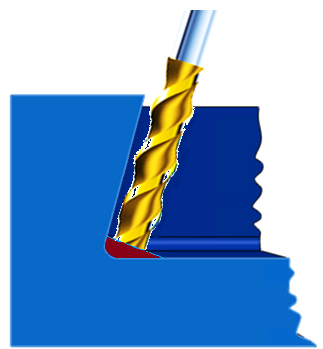
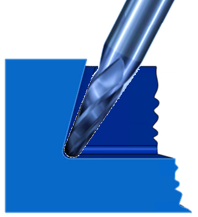
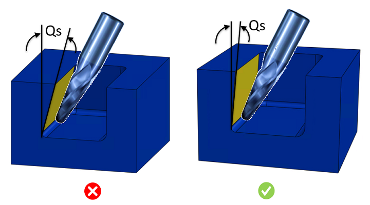

このルールはポケット面の角度を識別します。角度が推奨値を超える場合、エラーとしてフラグを立てます。
閉角ポケットとは、面角度が90度未満のポケットを指します。このような形状は4軸または5軸加工機で加工できます。この場合、図1に示すようにエンドミルで外周壁を加工する肩削り（ショルダーミリング）により材料を除去します。残った底面側の材料は、図2に示すようにボールノーズエンドミルで除去します。閉角が大きくなると、非標準のアンダーカットや工具アクセス性の問題が生じます。非標準のアンダーカットの場合、現場チームが専用のアンダーカット工具を製作する必要があり、リードタイムと投入コストが増加します。
|
 |
 |
|
図1 |
図2 |
閉角は許容範囲内に収める必要があります。閉角を大きくすると工具アクセス性の問題が発生します。内壁にこのようなアンダーカットを持つパーツを設計する場合、工具が容易に動作できるように十分なクリアランスを確保してください。ガイドラインでは、加工壁と他の任意の内壁との間における最小クリアランスは、アンダーカット深さの少なくとも4倍とすることが推奨されています。

ここでは、
Qs = 閉角